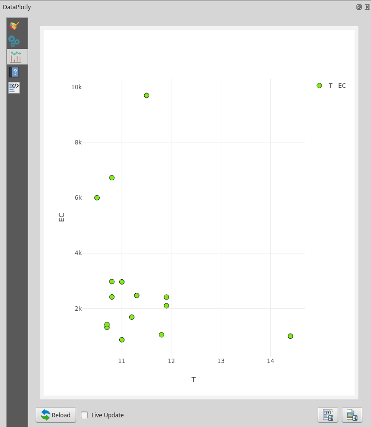
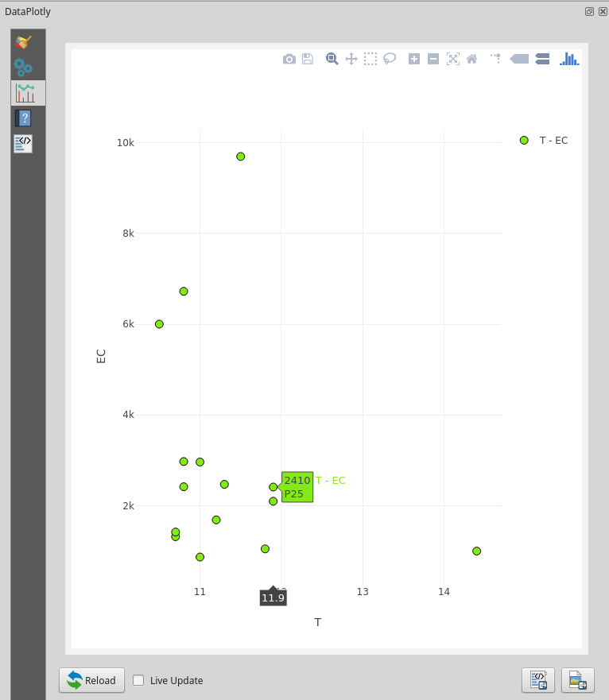

Spreidingsdiagram
Hier kun je de handleiding voor iedere parameter van het spreidingsdiagram vinden. Indien je meer generieke informatie zoekt, zie DataPlotly Standaard gebruik


Diagram eigenschappen
Layer: de keuzelijst toont alle in QGIS ingeladen vector lagen
X Field: het X veld
Y Field: het Y veld
Marker Color: de kleur van het diagram
Data Defined Override: je kunt een expressie toevoegen om de grootte van het symbool te definiëren. Als deze optie is geactiveerd zijn er meerdere opties beschikbaar: Color Scale, Visible and Invert Color.
Marker Size: de grootte van het symbool
Data Defined Override: je kunt een expressie toevoegen om de grootte van het symbool in te stellen
Stroke Color: kleur van de lijn
Stroke Width: de dikte van de rand
Marker Type: kies tussen Punten, Lijnen of **Punten en lijnen*
Point Type of Line Type afhankelijk van het gekozen Marker Type
Transparency: transparantieniveau van het punt of de lijn
Diagram aanpassingen
Show Legend: toon de legenda van het huidige diagram
Horizontal Legend: vink aan voor een horizontale legenda
Show Range Slider: voeg een schuifbalk toe onder het diagram

Plot Title: titel van het diagram
Legend Title: de titel van de legenda
X Label: X label tekst
Y Label: Y label tekst
Hover Infos: kies de informatie die zal worden getoond wanneer de muis op het diagramvenster wordt geplaatst
Additional Hover Label: kies een veld uit het diagram (of andere waardes) die samen met andere informatie getoond wordt. Dit veld ondersteunt expressies: bijv. ``Het ID van dit punt is ‘| ID’ ``:


Invert X Axis: vink aan wanneer je de sortering van de X-as wilt omdraaien
X Axis Mode: kies tussen Lineair, Logaritmisch of Gecategoriseerd
Invert Y Axis: vink aan wanneer je de sortering van de Y-as wilt omdraaien
Y Axis Mode: kies tussen Lineair, Logaritmisch of Gecategoriseerd